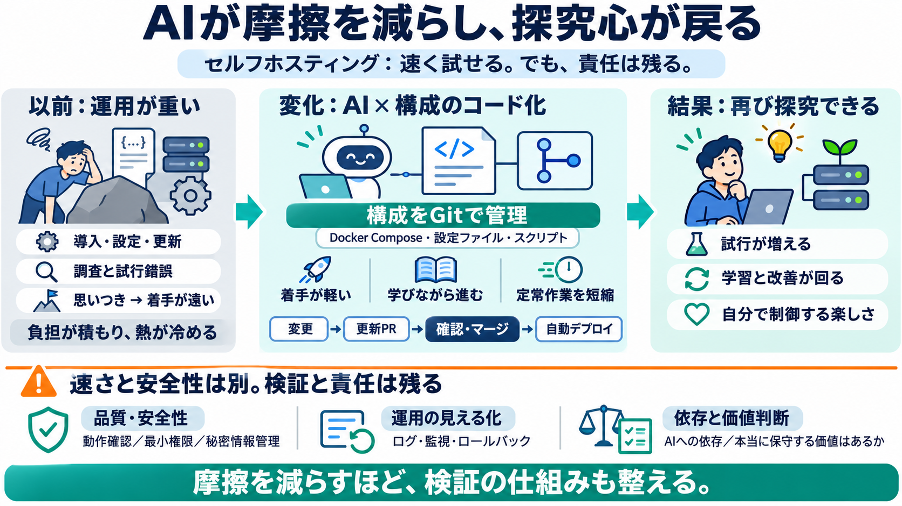

Self-Hosted Renovate · Actions · GitHub Marketplace · GitHub
Note that the `GITHUB_TOKEN` secret can't be used for authenticating Renovate. ## Example This example uses a personal…

セルフホスティング（self-hosting）で冷めかけた熱が、AIコーディングエージェントの登場で再点火した、という体験の読み解き。
セルフホスティングでは、導入・設定・更新・デプロイ・障害対応・セキュリティ対策が“定常業務”として残る。変更のたびに調査と試行錯誤が必要で、心理的に重くなりやすい（friction）。
調べてから着手、という流れにすると「思いつき→実現」が遅くなる。AIはその“最初の一歩”を軽くし、試行を前向きにする。
インフラ構成がGitリポジトリ（Docker Composeやスクリプト、設定ファイル）で管理されると、AIコーディングエージェントが“開発の延長”として使える。結果として、変更コストが下がり、実験が現実になる。
調査・試行錯誤の初動が楽になり、「やる価値ある？」の躊躇が減る。
理解しきらずに始め、走りながら改善できる（学習曲線が緩む）。
更新・ビルド・デプロイが自動化され、手作業はPR確認やマージ中心へ。
NixOS：最初から完璧に理解しなくても、AI支援で段階的に設定を作り込み、後から補完できる。
bootc：Debianベースのbootcイメージ自作のような時間がかかりがちな構想にも、着手しやすくなる。
手作業（バージョン調整→push→SSH→デプロイ…）から、GitHub Actions等での自動化へ移行し、更新作業を軽くする。
設定・構成をGit管理し、変更はコミットで表す。
RenovateがPRを作成し、必要な更新を提案。
Actionsがビルド/デプロイ連携し、適用はPR確認やマージ中心へ。
変更の心理的抵抗が下がり、試行が増えて改善サイクルが回る。
AI生成物や自動化は安全だと限らず、保守・検証・責任が残る。
つまり、AIは“魅力の理由そのもの”を作り替えたのではなく、熱を下げていた摩擦を取り除いた。
AIサービスやモデル/APIの変更で、運用の切り替えが難しくなる可能性。
AI生成コードにはバグ、技術的負債、セキュリティ問題が入り得る。
自動化が増えるほど、監査・権限・ログの設計で“自分が見る範囲”が問われる。
AIで作った設定やツールは、そのまま安全とは限らない。少なくとも動作確認、依存関係の安全性、権限設計、更新プロセスの監査が必要。
コンテナ起動・疎通・期待する挙動を必ず検査する。
権限最小化、秘密情報管理、脆弱性管理、監査可能なログを整える。
更新やデプロイが自動化されるほど、原因切り分けにはログや手順の可観測性（observability）が重要になる。本文では詳細は語られていないため、実装側で補う必要がある。
CI/CDログ、アプリログ、イベントの相関を取れる形にする。
稼働状況・死活監視・アラートを運用に組み込む。
ロールバック手順を“即実行”できる設計にする。
簡単に実装できるほど「やる価値が本当にあるか」が落とし穴になる。追加はメンテ対象を増やすため、保守・監視・更新・セキュリティが見合うかを定期的に問う。
サービス追加 → 対象範囲・更新頻度・障害面の増加。
責任 → 自分で検証し、運用を回す仕組みが必要。
AIはセルフホスティングの“魅力”を作り替えたというより、変更を重くしていた摩擦を減らし、学習・制御・試行錯誤を楽しめる状態へ戻した。
ただし速くなる分、検証と責任（安全性・可観測性・ロールバック設計）も同じ速度で整える。
本文理解のために登場する技術群と、運用上の論点（整合する前提）をまとめる。
Actionsでスケジュール実行・PR作成。認証で GITHUB_TOKEN が使えない場合の注意がある。
ビルド/デプロイの連携基盤。CIログの可観測性が重要になる。
構成の宣言化と学習曲線の緩和の例。AIエージェント隔離の考え方も関連する。
Note that the `GITHUB_TOKEN` secret can't be used for authenticating Renovate. ## Example This example uses a personal…
## Virtualisation agent-sandbox.nix - Declarative sandboxing for any package (e.g. AI coding agents) using bubblewrap …
n8n (`n8n-io/n8n` on GitHub) is a self-hostable workflow automation platform that bridges traditional deterministic SaaS…
= Node.agent( name="Data Processor", prompt="Process the results obtained from Smart Agent.", system_prompt="""You proce…
n8n is a workflow automation tool that executes predefined sequences of steps. OpenClaw is an AI agent that interprets n…